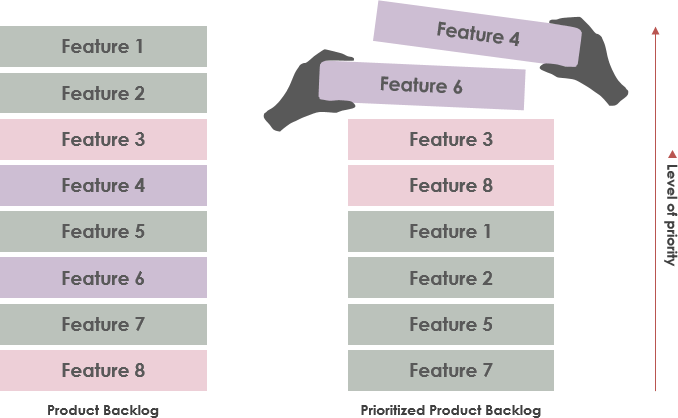
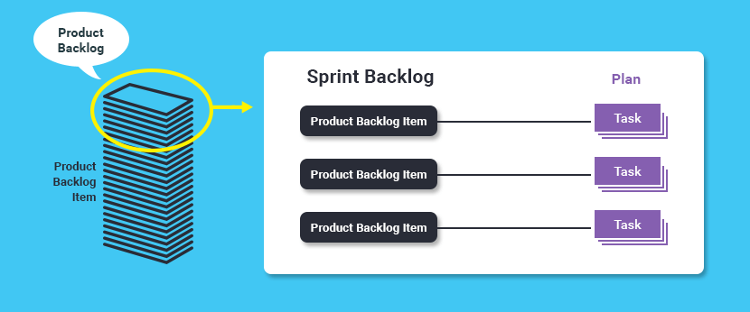
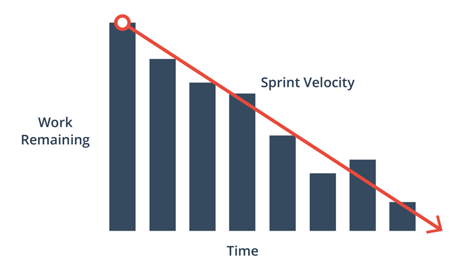

Created by Arthur Rubchenko
It's about managing complex projects
Let's look at the product from the customer's side
It's based on information available to you NOW
Get feedback quick enough
Then Scrum is what you likely to be want to use
Product Owner
Team
Scrum Master
What?
Why?
Speed!
How?
When?
Quality!
Balance
Focus
Support
Product Backlog
Sprint Backlog
Burndown chart
Define Users Stories
Prioritize
Set of Users Stories
Estimate this chunk of tasks
Monitoring
Rate of productivity
Sprint planning
Daily Scrum
Sprint review
What to do?
In which period of time
What did I do?
What am I going to do today?
Are there some problems & blockers?
So what ... ?